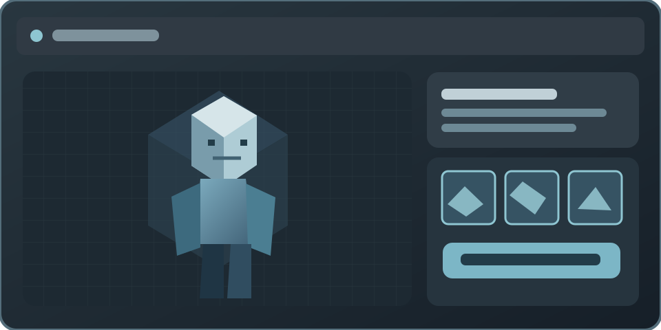

Ikony i nawigacja
Nowy wspólny styl ikon kategorii, wyraźny stan aktywnych przycisków oraz poprawiony kontrast.
Jedno miejsce do uruchamiania Minecraft Java, tworzenia instancji i zarządzania modami, shaderami, datapackami oraz paczkami zasobów. Wszystkie moduły korzystają z jednego motywu Ciemny Łupek. Logowanie Microsoft, instalację dodatków i uruchomienie gry sprawdź na swoim Windows; dołączony PvP HUD jest przygotowany dla Fabric 1.21.1.
Wersja 1.56.13 to paczka źródłowa do testów, nie publiczny instalator. Faktycznie udostępnione pliki sprawdzaj w GitHub Releases.
POGLĄDOWY PROJEKT INTERFEJSU — nie zrzut działającej aplikacji
Mody, modpacki, datapacki, shadery i resourcepacki mają własne kategorie. Wybór dodatku na stronie pokazuje możliwości — instalacja odbywa się w launcherze Windows.
Ujednolicamy wygląd launchera i strony. Widoki paczek, dodatków oraz serwerów zachowują swoje funkcje, a ikony otrzymują subtelniejszy cień. Aktywna ikona nie ma już pionowego paska wyboru.
Nowy wspólny styl ikon kategorii, wyraźny stan aktywnych przycisków oraz poprawiony kontrast.
Launcher próbuje odczytać oryginalne logo serwera Java po bezpośrednim sprawdzeniu statusu; gdy brak odpowiedzi, pokazuje inicjały.
Katalog Modrinth oraz instalacja datapacków do wybranego świata pozostają osobnymi, rzeczywistymi funkcjami.
To opis wydania rozwojowego. Pliki dla Windows są testowane osobno; na stronie pobierania sprawdzaj faktycznie opublikowaną wersję. Archiwalne wydania nie są już pokazywane na stronie głównej.
Każda funkcja ma własny ekran w aplikacji. Biblioteka dodatków, instalacje, edycja skina i zarządzanie profilami nie muszą być osobnymi programami.
Oddzielne instancje, wybór wersji Minecraft Java, kopie zapasowe, ulubione, przejrzystsze karty i kompaktowy układ.
Katalog Modrinth, instalowanie zgodnych modów i paczek oraz kontrola zależności. Inne integracje są w trakcie rozwoju.
Shadery, resource packi i datapacki w osobnych kategoriach, przypisane do właściwych profili i światów.
Obracany podgląd postaci, biblioteka skinów, edycja tekstur 64×64 i eksport PNG.
Logowanie Microsoft kodem urządzenia. Wymaga poprawnej konfiguracji aplikacji wydawcy i testów na Windows.
Serduszka nad graczami, niezależne pozycje kafelków FPS, CPS, Combo, mikstur i pancerza. Mod Fabric 1.21.1 jest dostępny jako osobne wydanie.
Kontrola plików Minecraft, raporty błędów i pomoc w przywracaniu sprawności instancji.
Odzyskiwanie usuniętych instancji ze światami i modami, bezpieczniejsze zarządzanie profilami.
Nowe MINEVORA PvP HUD 2.0.15 dla Minecraft Fabric 1.21.1 wyświetla serca nad postaciami i pozwala rozmieszczać kafelki tak, aby nie zasłaniały gry. Dołączony mod w launcherze obsługuje Fabric 1.21.1; działanie w grze wymaga testu.
To osobny JAR moda Fabric 1.21.1, nie instalator launchera. Wymagane są Fabric API i Java 21+. Synchronizacja układu z launchera do moda obsługuje skalę 75–100%; większa skala podglądu nie jest eksportowana.
Podgląd interaktywny: przeciągnij kafelki myszką lub palcem, aby zmienić ich pozycję; strzałki przesuwają zaznaczony kafelek. To wyłącznie demonstracja na stronie. W grze edytor otworzysz prawym Shiftem → HUD → PRZESUŃ KAFELKI.
Grafitowe panele, błękitno-stalowe akcenty, nowa grafika świata blokowego i czytelne ikony. Bez zbędnego przełączania motywów.
Tło #1E2022, panele #282C30, akcent #52616B, tekst #F0F5F9.
Jeden zestaw kontrastowych ikon, bez jasnych kwadratowych podkładów i z wyraźnym stanem aktywnej funkcji.
Oddzielne kategorie modów, paczek, shaderów, datapacków i resourcepacków.

Twórz własne skórki Minecraft i zapisuj je lokalnie. Wybieraj z biblioteki, obracaj postać w podglądzie 3D i edytuj teksturę piksel po pikselu.
Paczka rozwojowa 1.56.13 zawiera aktualizację PvP HUD 2.0.15. To kod do testów Windows, nie potwierdzony publiczny instalator. W GitHub Releases mogą być dostępne inne wersje.
MINEVORA 1.56.13 wymaga jeszcze testów logowania Microsoft, startu gry i PvP HUD w Minecrafcie. Przycisk prowadzi wyłącznie do rzeczywiście opublikowanych wydań GitHub.
Nie wyłączaj zabezpieczeń Windows. Zawsze sprawdź README, wersję i źródło pobieranego ZIP-a.
Wybierz dostępne wydanie ZIP z GitHub Releases i zapoznaj się z opisem wersji.
Rozpakuj archiwum do nowego folderu i przeczytaj README dołączone do wydania.
Uruchom skrypt z archiwum, wybierz profil, wersję Minecraft i zaloguj konto Microsoft.
Dołącz do społeczności MINEVORA. Znajdziesz tu aktualności o launcherze, dyskusje o PvP Studio oraz miejsce na pomysły i zgłoszenia błędów.
Oficjalny link zaproszenia: discord.gg/M2fZVJBCqh